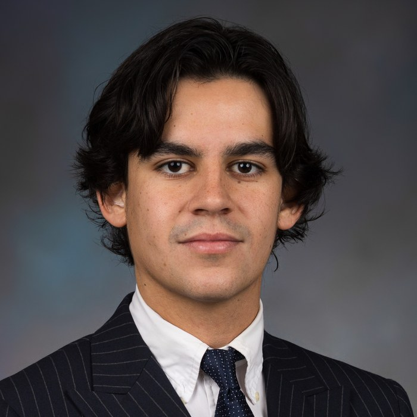

Mathieu Barthélémy
Fondateur de Phoxia, agence IA
IA appliquée au développement commercial · Business development international
+33 7 82 59 09 91 mathieu@phoxia.fr phoxia.fr LinkedIn Marseille · mobile en France, en Europe et au Canada
Profil
Diplômé en management international (ESSCA School of Management, MBA de l'Université Laval), j'ai fondé Phoxia pour mettre l'intelligence artificielle au service du développement commercial des PME : automatisation, agents IA, stratégie et formation des équipes. Mon approche vient du terrain : prospection B2B sur trois continents, conseil, vente et analyse de marché.
Expérience professionnelle
Fondateur et gérant
Depuis 2024Phoxia, agence IA · Marseille
- Création et pilotage de l'agence : offre, image de marque, site phoxia.fr, recrutement d'une équipe internationale de cinq profils.
- Trois domaines d'intervention : automatisation et agents IA, conseil et stratégie IA, développement sur mesure.
- Premières missions livrées : recherches d'alternance assistées par l'IA (France, Colombie, Espagne) et formation interne à Claude.
Agent de développement
2025 à 2026Missions Commerciales de l'Université Laval · mandat Groupe Shift · Québec et Mexico
- Représentant des ventes de Groupe Shift, éditeur québécois du logiciel IOM destiné à la sidérurgie.
- Analyse du marché mexicain de l'acier et construction d'un plan d'action complet.
- Mission de prospection de trois semaines à Mexico (mai 2026) : ciblage, prise de rendez-vous et rencontres avec des aciéries.
- Transmission à la cohorte 2026 à 2027 : fichier de 114 prospects qualifiés, séquences de prospection automatisées par l'IA.
Conseil, data et assurance
Avant 2025AXA · DigDash · FEET
- Vente de logiciels auprès de grands groupes au Maroc.
- Gestion commerciale d'une start-up singapourienne en Île-de-France.
- Mission de deux mois chez AXA sur la gestion des archives.
Consultant commercial
Avant 2025Campus Consulting · Le Lab RH · Yoburo · Bolt
- Qualification de cibles, prise de contact et ouverture de comptes pour des clients B2B.
- Déploiement de stickers sur véhicules et analyse des données de campagne pour Bolt.
Vente, relation client et gestion des stocks
Depuis 2017Student Pop · Victoria's Secret · celio · Jack & Jones · Cleor
- Tenue d'objectifs de vente en boutique, argumentaire produit et fidélisation client.
- Suivi des flux, inventaires et disponibilité en rayon.
Formation
MBA en gestion internationale
2025 à 2026Université Laval · Québec, Canada · double diplôme
Projet de fin d'études : les défis d'intégration de l'IA dans la fonction commerciale B2B en contexte d'internationalisation, analyse comparative Canada et Chine.
Master in Management (MIM), management international
Diplômé en 2026ESSCA School of Management · Aix-en-Provence
Programme Grande École, spécialisation management international.
Semestre international
Automne 2023Shanghai International Studies University (SISU) · Chine
Quatre mois sur le campus de Shanghai de l'ESSCA : marché chinois et affaires en Asie.